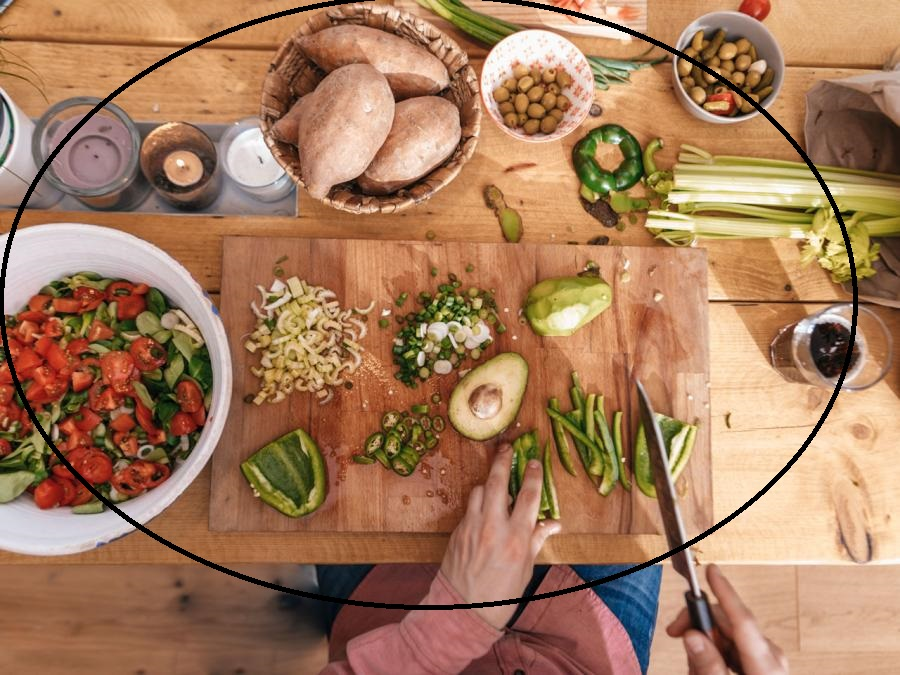
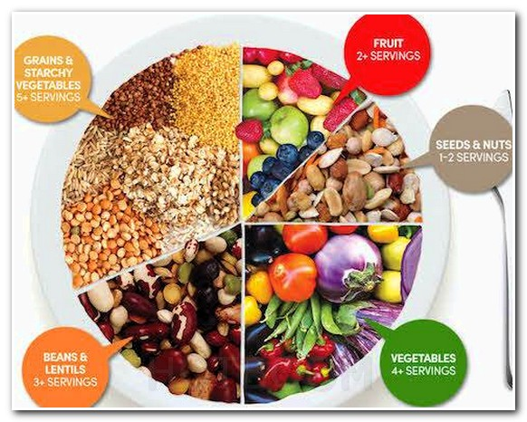
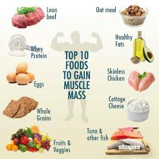

Meal Plan For Every Guy

If you're going to bulk up, lose fat, or stay healthy, you'll also need a goal-specific meal
plan to get results. We've created templates to help you do all three, along with
guidelines to help you track the calories, carbs, protein, and fat you should be shooting
for each day.
Stock your fridge and pantry with the foods outlined in our grocery lists to whip up
delicious, nutritious meals all year. To get you started, we've also included sample
recipes, plus plenty of options to swap in for added variety. This is your one-stop shop
for what and how to eat in the new year.
The composition of your meals will be determined by your goals and the timing of your
weight training. The meals in our New Year's plan are divided into two categories: those
with starchy carbs and those without.
Grocery List
You'll need to eat more starchy carbs and fewer fats before and after workouts to
promote energy and muscle growth. If you're training to pack on size, you'll eat like this
more frequently. And when you're hours removed from a workout, you'll limit starches
and increase fats, which will keep you on track to meet your fat-loss goals. For meals
containing starchy carbohydrates, your meal options include:
- Starches:Brown rice, quinoa, yams, potatoes, oats, whole-wheat pastas, bread, cereals, wraps
- Protein:Protein powders, egg whites, whole eggs (sparingly), white meat, white fish, Greek yogurt
- Fruits/Vegetables/Legumes:Tropical fruits, green/fibrous vegetables, beans
- Oils:Use sparingly; think teaspoons, not tablespoons
- For meals not containing starchy carbohydrates, your options are:
- Protein:Protein powders, eggs, white meat, red meat, oily fish or white fish, Greek yogurt
- Fruits/Vegetables/Legumes:Berries, green/fibrous, beans (sparingly)
- Oils/Fats:Tablespoons, not teaspoons. Avocados, nuts/seeds, coconut oil, canola
mayonnaise, full-fat cheeses

5 PILLARS OF NUTRITION
- Eat Six Times A Day:Fuel your body with multiple small meals and snacks each day
to keep your blood-sugar levels under control and your metabolism steady and to
stimulate the production of new muscle.
- Limit Processed Foods:Whether it comes in a box, a carton, or a bag, if it's got a
label or brand name, it's likely highly processed and not worth eating. Remove
these high-calorie, nutrient-poor foods from your life and you'll be much more likely
to stick to your New Year's resolutions.
- Stay Hydrated:Drink water and calorie-free beverages to keep your performance in
the gym at its peak. Avoid sugar-laden drinks that will fatten your waistline and
sabotage your body's antioxidant defense systems.
- Strategic Carbs:Carbs come in two forms—starchy, faster-acting options such as
rice, bread, and pasta, which raise blood sugar quickly; and non-starchy carbs such
as fruits, vegetables, and whole grains, which are higher in fiber and raise blood
sugar gradually. Non-starchy carbs are rarely a problem. Enjoy them! The timing of
when you eat starchy carbs, on the other hand, is key to getting and maintaining a
lean and muscular body. Eat them either first thing in the morning or directly after
your workouts and your body is more likely to use them to help refuel your energy
reserves.
- Lean Protein:Give your body a protein infusion every couple of hours to maximize
muscle growth while stimulating the release of fat-burning hormones. The best
sources include lean beef, chicken, fish, lower-fat dairy foods, and soy. While whole
foods should always be your first choice, a quality protein powder can be used in
conjunction with your diet to make sure you meet your protein macros each day.
Consider adding a whey protein or two between meals, and use slow-digesting
casein protein to fuel your gains at night while you sleep.
The Beginner Meal Plan

Target:2,500 calories, 218 g carbs, 218 g protein, 83 g fat
If you want to stay healthy and have more energy, this is the plan for you. It's relatively
low in carbs and very high in protein, and it emphasizes antioxidant-rich foods to
improve the health of your blood vessels while also warding off inflammation—two
factors that accelerate the rate at which every cell in your body ages.
Template
- Meal 1Contains starchy carbs
- Meal 2Few carbs, if any
- Meal 3Few carbs, if any
- Meal 4(Post-Workout Nutrition)Contains starchy carbs
- Meal 5Contains starchy carbs